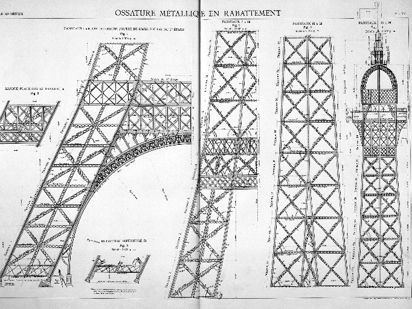
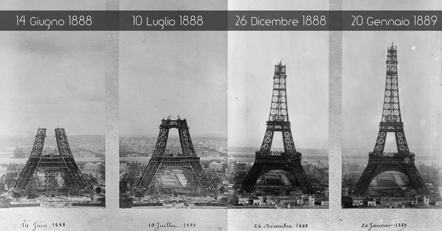

LA TORRE EIFFEL
La torre Eiffel è il monumento più famoso di Parigi, conosciuto in tutto il mondo come simbolo della città stessa e della Francia.
LA PROGETTAZIONE: Koechlin, Nouguier, Sauvestre
La forte industrializzazione che, a ritmi vertiginosi, aveva interessato la Francia nell'Ottocento, consentì la costruzione di edifici sempre più alti.
Ciò fu possibile grazie all'entrata in produzione di nuovi materiali edilizi, come le ghise e l'acciaio, impiegati per produrre travi e altri elementi
strutturali analoghi che, con le loro alte resistenze, rivoluzionarono il modo di costruire.
In questi anni segnati dal progresso industriale l'idea di una torre svettante che sfidasse la gravità era già nell'aria,
Maurice Koechlin e Émile Nouguier aderirono entusiasticamente all'impresa, due ingegneri alle dipendenze
della Compagnie des Établissements Eiffel, una fiorente ditta gestita da Gustave Eiffel, uno dei più accreditati «architetti del ferro»
del periodo, e l'idea che avevano avuto era ambiziosa: si trattava di un «imponente pilastro metallico, formato da quattro travi reticolari
svasate in basso che si congiungono in cima, legate tra loro mediante traverse disposte a intervalli regolari:La torre Eiffel.

LA COSTRUZIONE:gli inizi
La struttura fu costruita in meno di due anni, dal 1887 al 1889, in occasione dell'"Exposition Universelle" con lo scopo di commemorare il centenario della Rivoluzione Francese.
Il monumento con i suoi 320 mt. di altezza ha mantenuto il record di costruzione più alta del mondo fino al 1930,. Inizialmente
Eiffel aveva avuto il permesso di lasciare in piedi la Torre per soli 20 anni, ma vista la sua utilità per motivi di comunicazione e come laboratorio per studi scientifici gli fu dato il permesso di lasciarla in piedi.
Il solo materiale utilizzato per la costruzione della Torre Eiffel
è il ferro che venne eretto a forma di croce in più di 18.000 pezzi, fissati tra loro con circa 5.000.000 di bulloni.
che la fanno pesare circa 10.000 tonnellate.
Nelle giornate ventose sulla cima della Torre si possono verificare oscillazioni anche di 12 cm.

Torre Eiffel